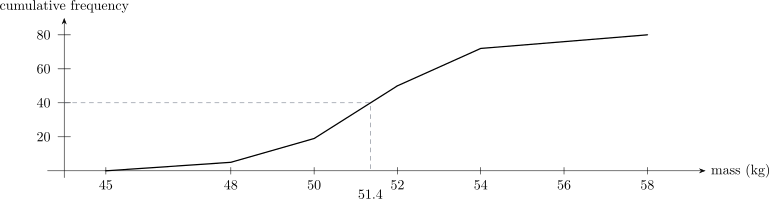

9.6 Cumulative frequency curves (ogives)
Definition 9.19. The cumulative frequency at a value is the running total of all frequencies up to and including that point — the number of observations less than it.
A cumulative frequency table answers questions of the form “how many are below this figure?” directly. If a council wants to know how many of its residents are under \(45\), that is a cumulative frequency.
Example 9.20. Draw a cumulative frequency curve for the masses of \(80\) bags of maize, and use it to estimate the median mass.
| Mass, \(m\) (kg) | \(45\leq m<48\) | \(48\leq m<50\) | \(50\leq m<52\) | \(52\leq m<54\) | \(54\leq m<58\) |
| Frequency | 5 | 14 | 31 | 22 | 8 |
Solution. Step 1 — accumulate the frequencies. Each entry is the previous total plus the next frequency:
| Mass less than | 45 | 48 | 50 | 52 | 54 | 58 |
| Cumulative frequency | 0 | 5 | 19 | 50 | 72 | 80 |
Step 2 — plot and join.

Step 3 — read off the median. Half of \(80\) is \(40\). Reading across from \(40\) on the vertical axis to the curve and down to the horizontal axis gives a mass of about \(51.4\) kg.
Note 9.21. Each point is plotted at the upper boundary of its class, because the running total is only complete once the whole class has been passed. Plotting at midpoints, as for a frequency polygon, is the usual error here — and it is the opposite convention, which is exactly why it is easy to confuse.
Questions on this section
Stuck on something here? Ask below and it stays attached to this topic.